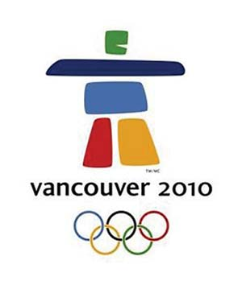

An inukshuk is a cairn of rocks erected by the Inuit people of the Arctic to create a recognizable landmark. It often takes the form of a man, and has been adopted as the symbol of the 2010 Winter Olympics in Vancouver, Canada. Along with the maple leaf and the beaver, the inukshuk is becoming another symbol of Canada.
You can make the inukshuk from flat rocks or, in northern regions, out of blocks of snow. For starters, find some boxes that have the basic dimensions of one-half foot by 1 foot by 2 feet. Pack snow into the box and let it set for a few hours to solidify. You will need six blocks, all the same or nearly the same size.
After removing the blocks from their form, assemble them as in the picture, at right. To make the structure sturdier, pour some water over the legs and let them freeze before stacking the other blocks. Two horizontal blocks are necessary to make the arms.
|
 ELENA RIVERA MACGREGOR The 2010 Winter Olympic mascot is this snowman, an inukshuk. Vancouver artist Elena Rivera MacGregor designed this winning inukshuk logo for the Winter Games. |
|
|